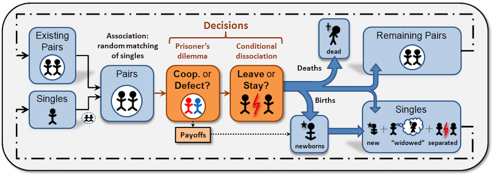

Conditional Dissociation in a fluctuating population. Cyp+By_fluctPop
Segismundo S. Izquierdo, Luis R. Izquierdo & Fernando Vega-Redondo
HOW TO INSTALL THE MODEL
To use Cyp+By_fluctPop_applet, you will have to install NetLogo 5.3.1 (free and open source) and download the model itself. Unzip the downloaded file and click on Cyp+By_fluctPop_applet.nlogo
This applet requires requires Java 5 or higher. You may obtain the latest Java plugin from
Sun's Java site.
OVERVIEW OF THE MODEL
Cyp+By_fluctPop is a model designed to analyse the effect of conditional dissociation in the evolutionary emergence of cooperation. This section gives an informal and brief overview of Cyp+By_fluctPop. We use bold red italicised arial font to denote parameters (i.e. variables that can be set by the user).
In Cyp+By_fluctPop, there is a population of num-players players that are randomly matched in couples (partnerships) to play a 2x2 symmetric game. The 2 possible actions players can take are denoted C (for Cooperate) and D (for Defect). After each interaction, every individual is given the option to stay in her current partnership, or break it (thus getting a new randomly chosen mate for the next stage).
At each time-step, every individual has a fixed probability of giving birth to one offspring, and an (independent) probability of dying. In principle, newborns adopt the strategy of an existing individual with probability proportional to her latest payoff, but mutations are also possible. Mutation occurs for each newborn with probability prob-mutation, and when this occurs, the newborn picks up a decision rule at random.
DESCRIPTION OF THE MODEL
This section explains the formal model that Cyp+By_fluctPop implements. The information provided here should suffice to re-implement the same formal model in any sophisticated enough modelling platform. The figure below provides an informal sketch that illustrates the sequence of events within each time-step.

Sketch of the sequence of events within each time-step.
The "Remaining Pairs" and "Singles" at the end of a time-step are identical to the "Existing Pairs" and "Singles" in the next time-step.
The game
Consider a population of individuals who are matched in pairs (if the number of individuals in the population is odd, then one randomly chosen individual is left out). In each time-step, the two members of every pair play a symmetric 2x2 game once, where each of them can undertake one of two possible actions. These two possible actions are called C (for Cooperate) and D (for Defect). The action selected by each of the players determines the magnitude of the payoff that each of them receives in that time-step: CC-payoff, CD-payoff, DC-payoff, or DD-payoff, where AB-payoff denotes the payoff that an individual choosing action A obtains when her counterpart chooses action B.
After having decided to cooperate or not, both individuals simultaneously decide whether to stay with their current partner (S, for Stay), or break the partnership (L, for Leave). The Stay/Leave decision may be conditioned on the current partner's preceding action (C or D) -hence the name "conditional dissociation". If any one of the two individuals in a pair decides to leave, the partnership is broken and both individuals become single.
The strategies
Each individual carries three "genes" that shape her behaviour.
- The first gene determines the individual's action, C or D, in the first interaction of a new partnership.
- The second gene determines what to do after the interaction in case one's partner has played C. The options are: C, D, or L, where L stands for the decision to Leave one's current partner, D stands for the decision to remain with one's partner and Defect in the next time-step (if the partner does not leave or die), and C stands for the decision to remain with one's partner and Cooperate in the next time-step (again, assuming the partner does not leave or die).
- Finally, the third gene determines the choice - also C, D or L - after one's current partner has just played D.
A strategy thus specifies a course of action at every possible juncture in an individual's life. We permit all 18 possible strategies or decision rules. Hence, there are (18·18+18)/2 = 171 strategy pairs.
The time line
The population process advances in discrete time-steps t = 1, 2, 3,... which are called "ticks" in the interface of the model. In each time-step, the following events occur in sequence (see Figure above):
- Random matching of singles. At the beginning of each time-step, single individuals are randomly matched in pairs (partnerships), with all matches being equally likely. (If the number of individuals in the population is odd, then one randomly chosen individual is left out of the game and his payoff is not updated.) At the beginning of the very first time-step all individuals are single.
- Pairwise interaction. All pairs play the 2x2 symmetric game described above once. Each individual's action (C or D) is determined by her decision rule, as applied to her immediate past experience, i.e., whether she is involved in a new partnership or not, and, in the latter case, the action that her partner took in the preceding time-step.
- Conditional dissociation. Every individual decides whether to leave or stay, according to her decision rule. Individuals involved in partnerships that are broken join the pool of singles entering the next time-step.
- Birth. Individuals may give birth to one offspring, an event that occurs independently for each individual with probability p = 1/exp-life in each time-step. These new entrants copy independently the decision rules of individuals in the population that started the current time-step (i.e. newborns cannot be copied); the probability that any particular individual's decision rule will be copied is proportional to the individual's payoff in the current time-step. This copying is subject to random mutation, which occurs with a constant probability prob-mutation. In this event, the new entrant instead picks up a decision rule at random, with equal probability for all 18 decision rules. New entrants are naturally added to the pool of singles entering the next time-step.
- Death. Individuals randomly die, an event that occurs independently for each individual with probability p = 1/exp-life in each time-step. Hence, the lifespan of an individual is geometrically distributed with mean-value exp-life = 1/p. Newborns cannot die in the time-step they are born. The death of an individual renders her partner single, so those individuals whose partner died also join the pool of singles entering the next time-step. Thus, the pool of singles entering the following time-step will be composed of new entrants (imitators and mutants), separated individuals from broken pairs, and "widowed" individuals (those whose partner died).
HOW TO USE IT
Payoffs
- CC-payoff: Payoff obtained by a player who cooperates when the other player cooperates too.
- CD-payoff: Payoff obtained by a player who cooperates when the other player defects.
- DC-payoff: Payoff obtained by a player who defects when the other player cooperates.
- DD-payoff: Payoff obtained by a player who defects when the other player also defects.
Population parameters
- initial-num-players: Initial number of players in the population.
- initial-strategy: Initial strategy for the population. It can be any of the 18 strategies for the whole population, or "random".
- If random is selected, each player takes one of the 18 possible strategies with equal probability.
- Otherwise, every player in the population adopts the selected strategy. We use the notation X1-X2-X3, where X1 ∈ {C, D} is the action to take with a new partner, X2 ∈ {C, D, L} is the action to take if one's current partner cooperated, and X3 ∈ {C, D, L} is the action to take if one's current partner defected. For instance, C-C-L is the strategy that cooperates with any new partner, stays and cooperates if the current partner cooperated in the previous interaction, and leaves if the partner defected in the previous interaction.
- exp-life: Expected life of every player in the population. This parameter controls both the birth and the death process. It sets both the probability of giving birth and the probability of dying at every time-step to the value (1/exp-life).
- prob-mutation: Probability with which a new entrant adopts a random strategy.
Buttons
- Setup: Creates a new population of num-players players using the corresponding initial-strategies.
- Go once: Pressing this button will run the model one time-step only.
- Go: Pressing this button will run the model until this same button is pressed again.
Definition of regimes
The model can track the number of time-steps that the system has been in one of two possible regimes and the number of transitions in between these two regimes. The regimes are called cc-regime and dd-regime. At any given time-step:
- The system is said to be at the cc-regime if and only if the fraction of CC outcomes is contained in the interval [cc-lower-limit , cc-upper-limit].
- The system is said to be at the dd-regime if and only if the fraction of DD outcomes is contained in the interval [dd-lower-limit , dd-upper-limit].
MONITORS AND PLOTS
Monitors
- time-step: Number of time-steps that have gone by.
- num-players: Number of players at the beginning of the time-step.
- number of CCs: Number of couples where both players cooperated in the current time-step.
- number of CDs: Number of couples where one player cooperated and the other player defected in the current time-step.
- number of DDs: Number of couples where both players defected in the current time-step.
- cc-regime: Number of time-steps that the system has been in the cc-regime.
- cc to dd ->: Number of transitions from the cc-regime to the dd-regime.
- <- dd to cc: Number of transitions from the dd-regime to the cc-regime.
- dd-regime: Number of time-steps that the system has been in the dd-regime.
Plots
Importantly, all plots refer to the situation before any player gives birth or dies.
- % Individuals separated: Time series with the proportion of players who separated in each time-step.
- Outcome Frequencies: Time series of the frequency distribution of outcomes in the population (CC, CD or DD).
- Strategy Distribution: Time series of the distribution of strategies in the population.
- Behaviour new partner: Time series showing the allele frequency for the locus that determines the individual's action, C or D, in the first interaction of a new partnership.
- Behaviour after C: Time series showing the frequency of each possible behaviour that a player can take after her partner has cooperated, i.e.:
- Stay and Cooperate in the next time-step (Stay-C).
- Stay and Defect in the next time-step (Stay-D).
- Leave and Cooperate in the next time-step (Leave-C).
- Leave and Defect in the next time-step (Leave-D).
- Behaviour after D: Time series showing the frequency of each possible behaviour that a player can take after her partner has defected, i.e.:
- Stay and Cooperate in the next time-step (Stay-C).
- Stay and Defect in the next time-step (Stay-D).
- Leave and Cooperate in the next time-step (Leave-C).
- Leave and Defect in the next time-step (Leave-D).
- Avg Payoff: Time series showing the average payoff in the population (series named "all") and the average payoffs for the players who are part of a new partnership (series named "new couples").
LICENCE
Cyp+By_fluctPop_applet is a model designed to analyse the effect of conditional dissociation in the evolutionary emergence of cooperation.
Copyright (C) 2009 Segismundo S. Izquierdo & Luis R. Izquierdo
This program is free software; you can redistribute it and/or modify it under the terms of the GNU General Public License as published by the Free Software Foundation; either version 3 of the License, or (at your option) any later version.
This program is distributed in the hope that it will be useful, but WITHOUT ANY WARRANTY; without even the implied warranty of MERCHANTABILITY or FITNESS FOR A PARTICULAR PURPOSE. See the GNU General Public License for more details.
You can download a copy of the GNU General Public License by clicking here; you can also get a printed copy writing to the Free Software Foundation, Inc., 51 Franklin Street, Fifth Floor, Boston, MA 02110-1301, USA.
Contact information:
Segismundo S. Izquierdo
University of Valladolid, Spain.
e-mail: segis@eis.uva.es
MODELLERS
This program has been designed and implemented by Segismundo S. Izquierdo & Luis R. Izquierdo.